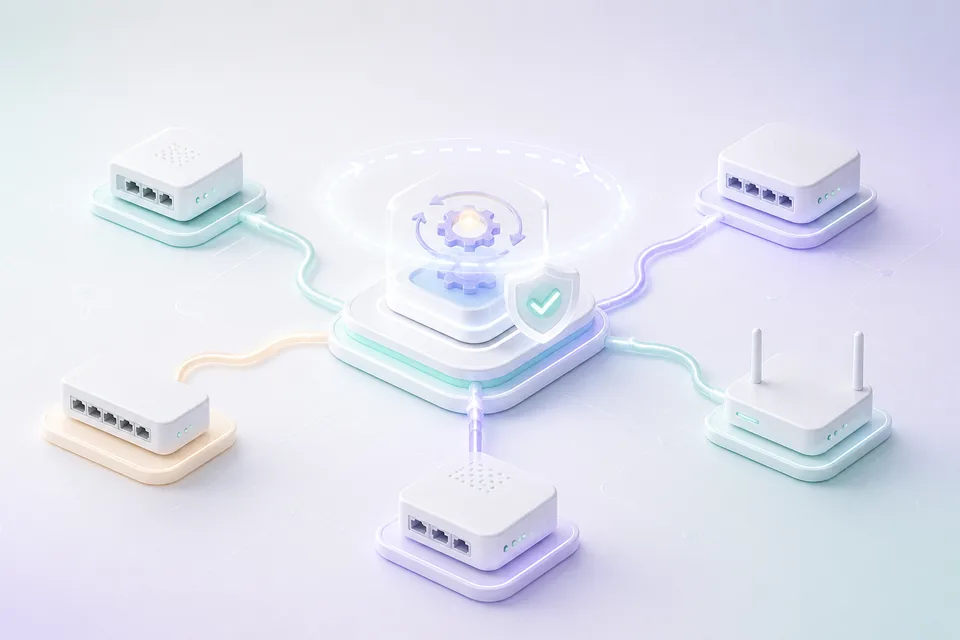
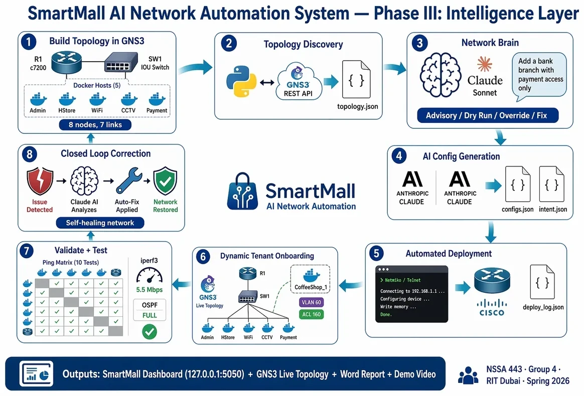
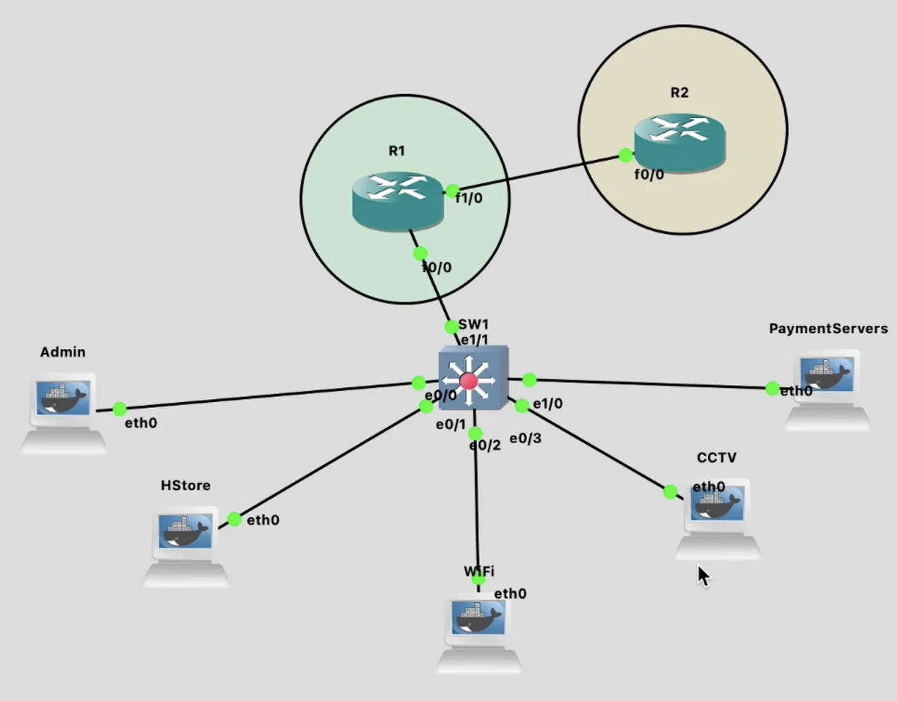
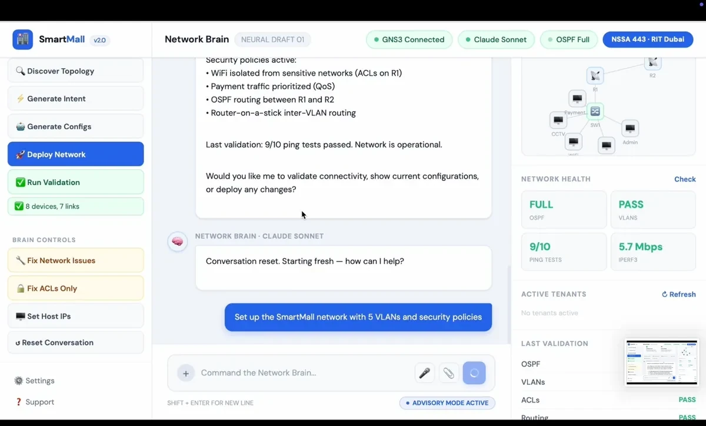
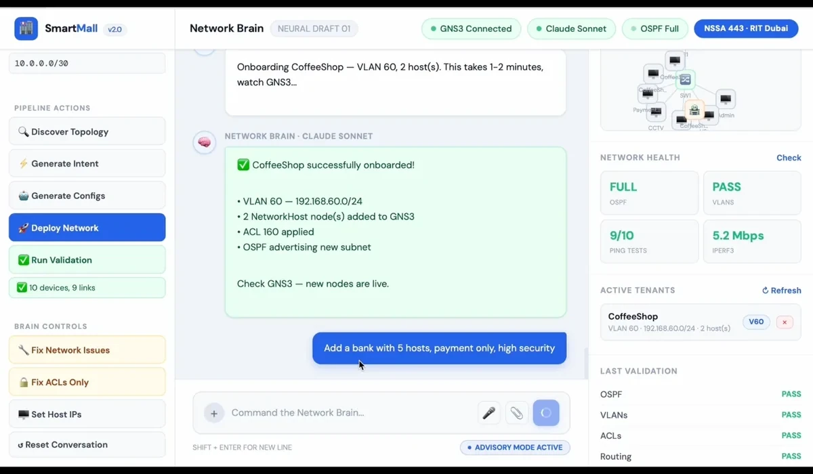
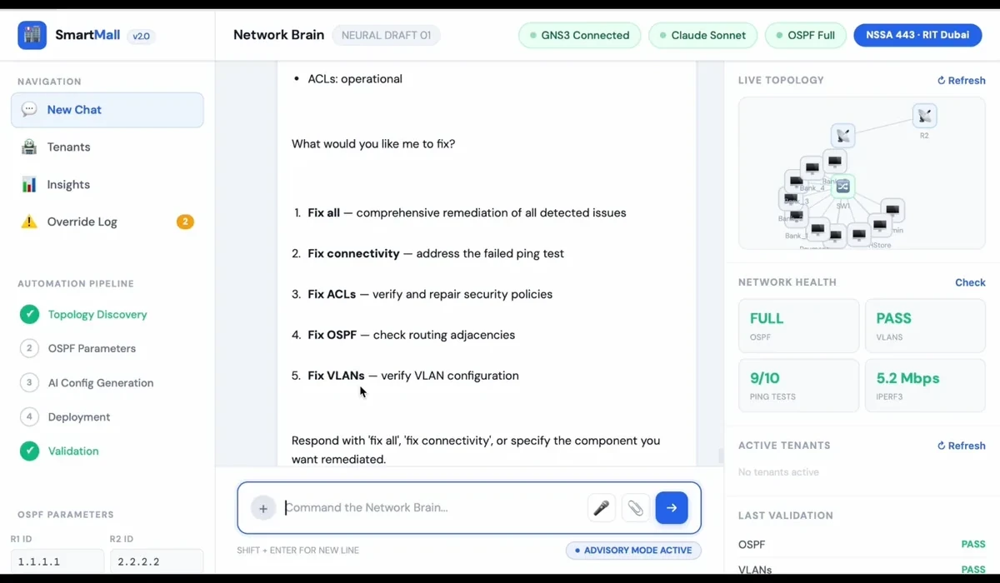
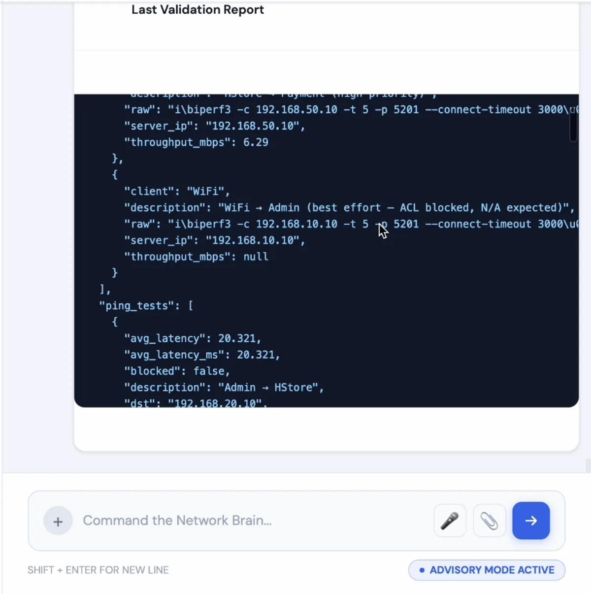
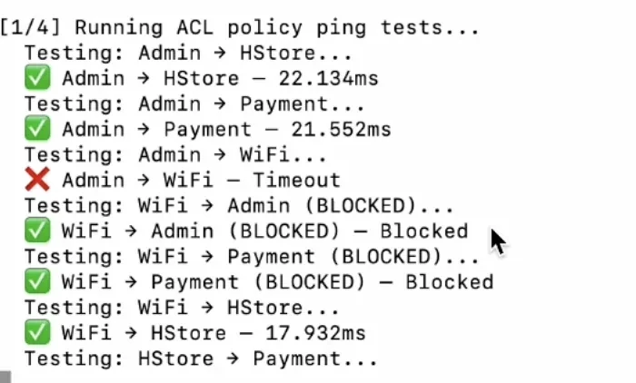

01
Presentation
HTML, JavaScript, and CSS provide chat, controls, tenant records, live topology, and system feedback.
A proof of concept that turns plain-English requests into explainable network plans, deployment actions, validation evidence, and closed-loop recovery.
Collaboration disclosure: This was a five-person group project. The team designed and built the system collaboratively; Yahya’s documented contribution centered on documentation and error handling. Group outcomes are identified as team results.

The system combines a browser interface, an AI-assisted intent layer, Python automation, and an emulated Cisco network.

HTML, JavaScript, and CSS provide chat, controls, tenant records, live topology, and system feedback.
The Network Brain interprets requests, carries current topology context, and produces structured actions.
Python, Flask, Netmiko, and GNS3 coordinate configuration, validation, tenant lifecycle, and recovery.
The proof of concept used five trust zones, router-on-a-stick inter-VLAN routing, OSPF, ACL policy, and QoS prioritization.





This simplified frontend interaction demonstrates the closed-loop idea without connecting to the original lab.
Passed after the Wi-Fi isolation ACL was deliberately removed.
Passed after the closed-loop correction process.
Reported for the demonstrated correction sequence.
Small emulated topology, not a commercial production network.

Full validation could take about five minutes, with larger cycles reaching roughly fifteen minutes or more.
Simultaneous onboarding requests were not supported and could conflict over VLAN or port assignments.
The environment was small, IPv4-only, Cisco-focused, single-site, and lacked production RBAC.
Generated ACLs sometimes differed from policy, and model calls were reported as comparatively expensive for the prototype.